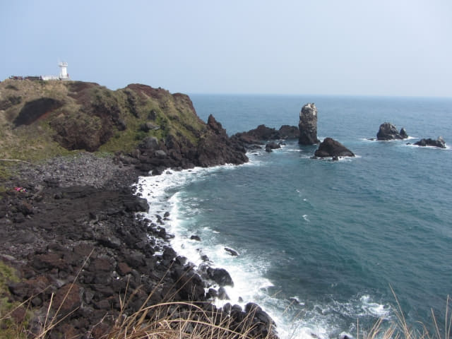

早上九時十分在我們下榻的美麗度假村出發, 原本是步行往涉地可支的, 怎料因巴岳那段步路因工程封閉了, 被逼改為走其他小路, 結果在吾照里的村莊內迷了路, 兜兜轉轉了一小時, 還沒法穿過村莊, 最後胡里胡塗亂走到一條高速公路, 幾經困難才截到一輛計程車來到涉地可支, 剛剛過了中午十二時, 足足花了三小時的時間, 終於來到涉地可支, 既氣憤, 又興奮!
涉地可支又稱涉地岬, 位於濟州島的東部海岸, 其名字在濟州島方言中意思是「狹窄的地方」。涉地岬最突出的地方是海岸佈滿暗紅色的火山灰, 而且還聳立著千姿百怪奇岩, 吸引世界各地旅客前來遊覽。
下了車, 停車場旁便是一望無際的大海, 海邊都是奇形怪狀的岩石 – 烏龜、人頭、蘑菇、石柱等等….., 只是加上一些想像, 眼前都是千姿百怪的岩石。

遠處海岸的立石岩, 細訴著仙女和龍王子的愛情故事。
站在展望台, 已經看到遠處岬角上的白色燈塔, 那是涉地可支其中一個地標, 我們就是步行往那裡。
離開奇岩海邊石灘, 沿彎彎曲曲步道往上走。
山坡上韓劇 All in 裡的教堂, 本是優雅浪漫的教堂, 改建成俗不可耐的糖果屋, 令涉地可支的吸引力減退不少。
沿途腳下海濤泊岸, 景緻十分怡人。
涉地可支自古以來流傳著一個悲傷的愛情故事。
立石岩愛情故事
涉地可支在古時候是仙女下凡沐浴的地方, 龍王兒子愛上了其中一位仙女, 並懇求龍王允許他們結婚。龍王答應兒子在一百天後可以與仙女結婚, 但到了第一百天那天, 大海波濤洶涌, 仙女不能下凡, 而龍王的答允也取消, 站在岸邊盼望仙女出現的龍王兒子, 因傷心欲絕子就站變成了岩石 – 立石岩。
鳥兒竟然無懼風浪, 在岩石上築巢!
走走看看, 很快便來到山坡上的糖果屋。自從優雅浪漫的教堂改建成糖果屋後, 再沒有旅客爭相拍照的情況, 涉地可支也少了一個地標, 不知道為什麼韓國旅遊局有這個決定。
岬角另一邊的風景, 沒有立石岩那邊的吸引。
慢慢沿步道向前走, 愈來愈接近立石岩, 可以更清楚看到它的形態。

再往前走一會, 來到方斗浦燈塔 (방두포등대)下的一片遼闊油菜花田, 黃澄澄的, 十分漂亮。